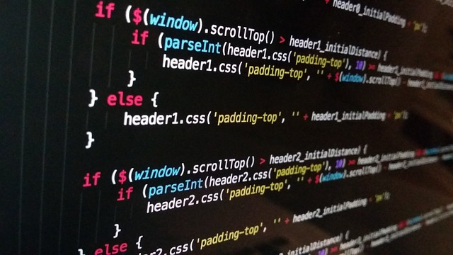
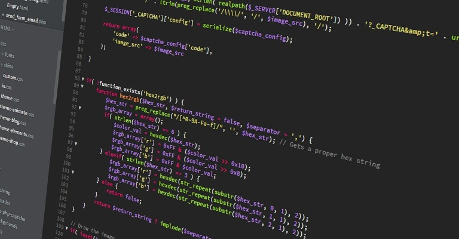

Siapa Saya?
Saya Yehezkiel Nanda Pradana, seorang junior web developer yang masih belajar dan sedang bersekolah di SMK Pangudi Luhur Seputih Mataram, kelas 10 RPL 2. Saya memiliki ketertarikan besar dalam dunia pemrograman web dan berfokus pada pengembangan website yang menarik dan fungsional.
Meskipun saya masih dalam tahap belajar, saya memiliki tekad untuk terus berkembang dan mengasah keterampilan dalam web development. Saya berharap dapat menciptakan solusi teknologi yang berguna dan bermanfaat bagi banyak orang. Misi saya adalah untuk terus mengeksplorasi hal-hal baru dalam dunia web development dan memberikan kontribusi yang berarti.
 Hubungi Saya